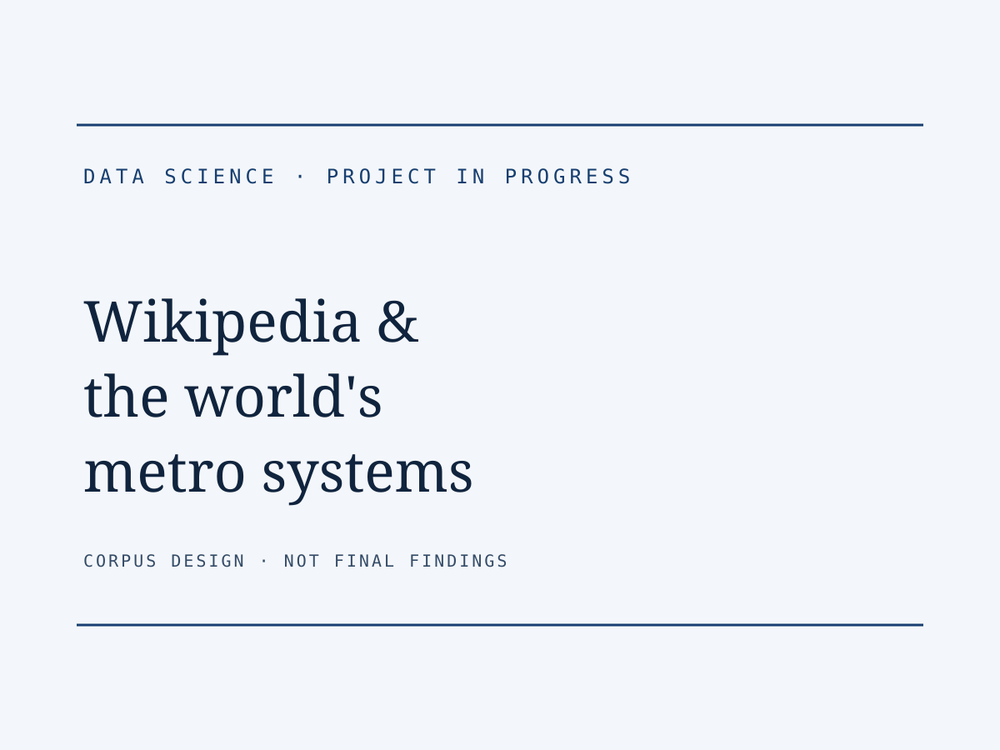

Data science coursework · Fall 2026 · in progress
How Wikipedia Documents Metro Systems
A computational project examining how English Wikipedia covers urban rail infrastructure through articles, revisions, and readership.

Research Question
The project asks how an online encyclopedia documents metro systems and how article attention and editing activity might relate to system characteristics. The analysis combines a defined set of English Wikipedia articles with revision records, daily pageviews for 2025, and system-level metadata.
Collection Design
The corpus manifest records 234 distinct articles linked from the English Wikipedia list of metro systems, 86,403 retrieved revision records, and daily pageviews for January through December 2025. Revision collection is capped at the 500 most recent records per article.
Open the source list of metro systems ↗
Limitations and Status
The project is in progress, and these figures describe the data collection scope rather than final results. Wikipedia activity is not a measure of transit service quality or a system's overall importance. The corpus manifest also notes that some manually curated metadata sources still need documentation; those fields are not treated here as verified findings.